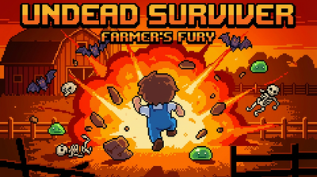
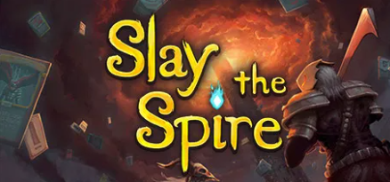
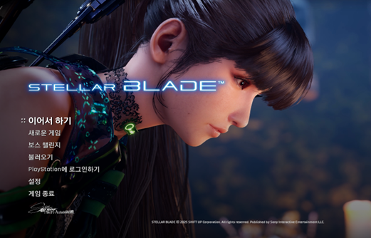
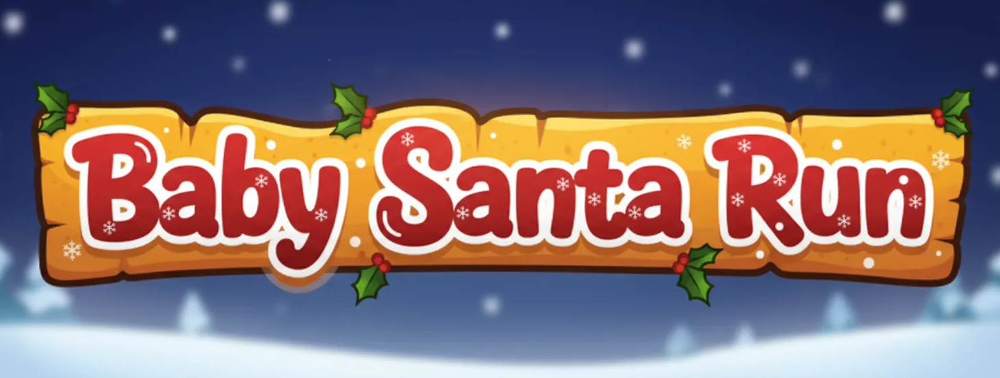

About me
시스템의 기준을 설계하고, 플레이 테스트로 검증하는 게임 기획자
성장보상 구조를 설계하고, 플레이 결과를 바탕으로 기획 의도와 체감 경험의 차이를 조정합니다.
Project Experience
-

Undead Survivor 로그라이트 시스템 기획
2025.12 | 개인 프로젝트 | Unity | AI 활용 프로토타이핑레벨업상점웨이브 보상으로 성장 경로를 나누고, 보상비용 밸런스를 조정한 로그라이트 게임입니다.
[기여] 성장보상 구조 설계 / 특수 무기 4종 역할 분리 / 웨이브 난이도와 보상 수치 조정
[성과] Excel 기준표와 50회 이상 플레이 테스트를 바탕으로 보상비용 밸런스와 난이도 곡선을 조정 -

Slay the Spire 코스트 체계 역기획서
2026.01.21 2026.02.16 | 시스템 분석 | 문서화아이언클래드 공격 카드의 효율 기준선을 가정하고, 비용과 보정 구조를 분류한 역기획서입니다.
[분석] 기준선 초과 카드의 비용 구조 / 기준선 미달 카드의 보정 구조 정리
[성과] HP 소모 유형의 선택 폭을 넓히는 신규 카드안을 제안하고, 수치 기준으로 검토 -

Stellar Blade 방어 액션 시스템 역기획서
2025.12.03 2026.01.02 | 액션 시스템 분석 | 문서화회피패링블링크리펄스의 대응 방식과 보상 구조를 비교한 액션 시스템 역기획서입니다.
[분석] 색상 신호의 판단 보조 구조 분석 / 에너지 2종이 방어 스타일을 나누는 방식 정리
[성과] 다수전 피격 체감과 핵심 스킬 학습 동선을 개선하는 UI연출 보완안을 제안 -
매일 보관함 VR 상호작용 시스템 기획
2025.03 2025.08 | NCA 장기과정 2기 쇼케이스 전시 | 6인 팀 | UE5초기 피드백을 바탕으로 감상 중심 VR을 참여형 경험으로 확장한 힐링 게임입니다.
[기여] 버스카드 퍼즐창문 낙서사진 업로드 등 상호작용 5종 기획 / 맵 축소와 리소스 조율안 제안
[성과] 상호작용 요소를 프로젝트에 반영하고, 최종 플레이타임을 8~9분 수준으로 조정 -

Baby Santa Run 캐주얼 러닝 시스템 기획
2024.11 2024.12 | NCA 장기과정 1학기 | 4인 팀 | UE5웹툰 감상 후 가볍게 플레이할 수 있도록, 조작 부담을 낮춘 캐주얼 러닝 게임입니다.
[기여] 방향 조정점프 중심 조작 설계 / 선물 상자 수집 목표와 TP 리스폰 구조 기획
[성과] 추락 후 즉시 복귀하는 리스폰 구조로 반복 피로를 줄이고, 장르 선택 근거를 문서화
Education & Experience
-
NCA (New Content Academy) 장기과정
2024.09 — 현재 (조기 수료 가능)AI 활용 콘텐츠 인재 육성 과정 수료 예정.
UE5 기반 팀 프로젝트 2회 완수, NCA 2기 쇼케이스 전시 출품. -
(주)대상 영업관리직 근무
2022.10 — 2024.08매출/재고 데이터 분석 기반 의사결정. 공급 위기 시 재고 재배치로 행사 정상 진행.
데이터 기반 의사결정 경험을 수치 밸런싱에 활용. -
아주대학교 문화콘텐츠학과
2015.03 — 2023.02 (졸업)문화콘텐츠 기획 전공. 게임, 영상, 스토리텔링 등 콘텐츠 제작 학습.
AI 활용 기획 워크플로우
기획 역량을 가속하기 위해 AI 도구를 각 단계에 통합해 반복 속도를 높입니다.
-
01
기획
아이디어 정리·레퍼런스 분석 · Undead Survivor 컨셉 정리 시 Claude로 레퍼런스 10종 교차 분석
-
02
설계
시스템 구조 문서화·밸런스 시트 포맷 · 상점/보상 수치 테이블 초안을 Claude로 생성 후 수작업 검증
-
03
프로토타입
Unity/웹 프로토타입 구현 보조 · Cursor로 슬라이드 퍼즐 역생성 알고리즘 프로토타입 구현
-
04
검증
수치 시뮬레이션·Edge case 도출 · Slay the Spire 코스트 기준선을 Claude 시뮬레이션으로 교차 검증
-
05
테스트플레이
플레이 로그 분석·패턴 추출 · 50건 플레이 로그를 Claude로 요약·병목 구간 추출
-
06
수정
피드백 반영 이터레이션 · 보상-비용 오차 0.6%까지 6회 반복 조정 기록 정리
사용 툴
게임 엔진
-
 Unreal Engine 5
Unreal Engine 5 중 -
 Unity
중
Unity
중
기획 도구
- Excel (밸런스 시트) 상
- Word 상
- PowerPoint 상
AI 도구
- Claude Code 상
-
 Cursor
중
Cursor
중